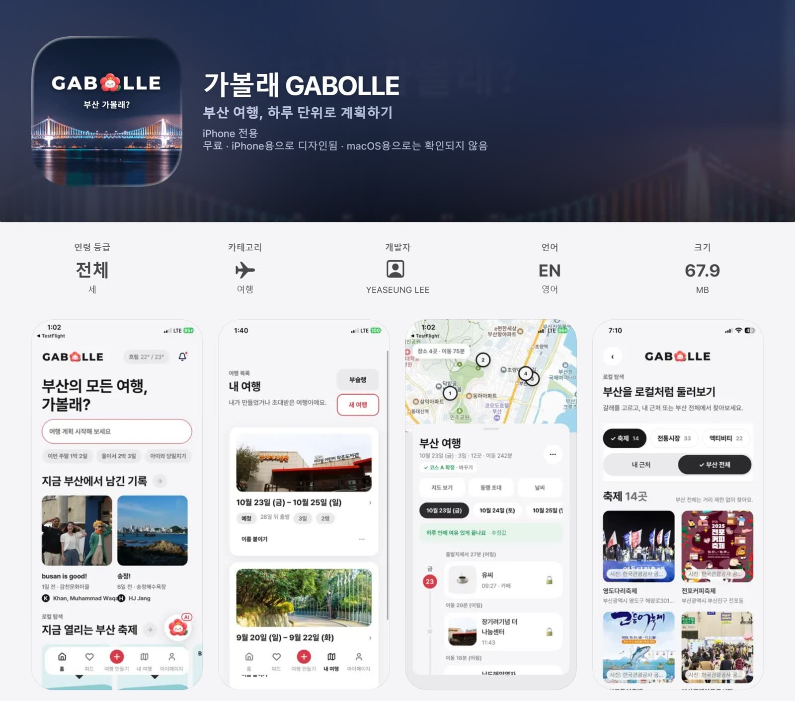
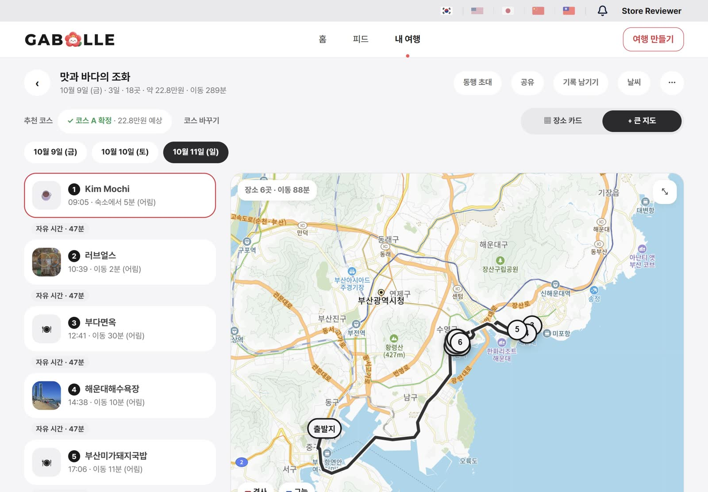
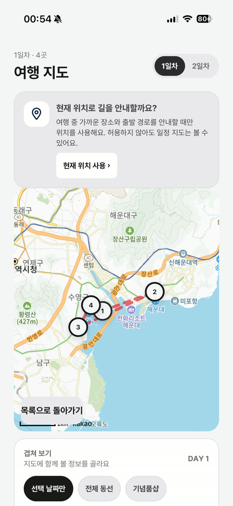
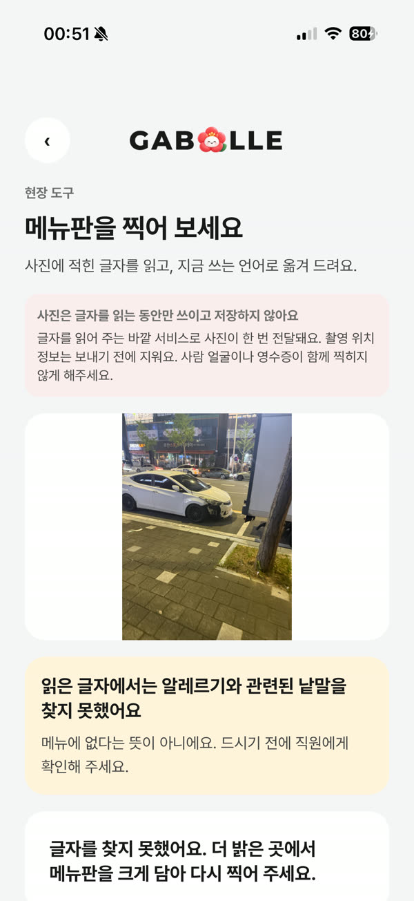

SSAFY 특화 프로젝트 · 우수상 2등
가볼래
취향, 예산, 걷기 조건을 반영해 부산 여행 일정을 짜고, 장소마다 추천 이유를 함께 보여 주는 서비스입니다. 경사, 그늘, 계단까지 고려합니다.




풀었던 문제
재전송된 이벤트가 취향에 두 번 더해졌다
원인ID를 직접 넣는 엔티티라 Spring Data가 persist 대신 merge로 저장해서, 중복 예외가 한 번도 나지 않았습니다.
접근INSERT … ON CONFLICT DO NOTHING의 영향 행 수로 판정하고, 장부 기록과 취향 반영을 한 트랜잭션으로 묶었습니다.
결과동시·순차 중복과 중간 장애 시 손실을 함께 막았고, 통합 테스트로 고정했습니다.
배치를 걷어내자 취향이 시간을 모르게 됐다
원인90일 삭제가 몰래 감쇠 역할을 하고 있었습니다.
접근매일 raw × 0.97 + 오늘 기여. 이벤트 시각을 저장하지 않아도 무게가 0.97경과일이 됩니다.
결과압축값이 아니라 raw에 곱해야 한다는 점을 테스트로 고정했습니다. 직접 고른 설문 값은 감쇠하지 않습니다.
코스 목록이 3.7초, 최장 12.8초 걸렸다
원인OR-Tools 프로세스가 한 번 뜰 때마다 약 0.45초. 3일 × 2안이면 2.7초가 반복됐습니다.
접근같은 추천 판과 요청자 기준으로 2·3안 초안을 한 번만 계산하고, 동시 요청은 future로 합쳤습니다.
결과응답 형태를 바꾸지 않고 재계산을 없앴습니다.
후보 200곳 중 199곳이 식당이었다
원인가산점이 상위 200을 독식하는 구조였습니다.
접근자르기 전에 갈래별로 몫을 나눴습니다. 고른 갈래 70%, 끼니 15%, 쉼 5%.
결과취향을 지키면서 일정의 다양성을 보장했습니다.